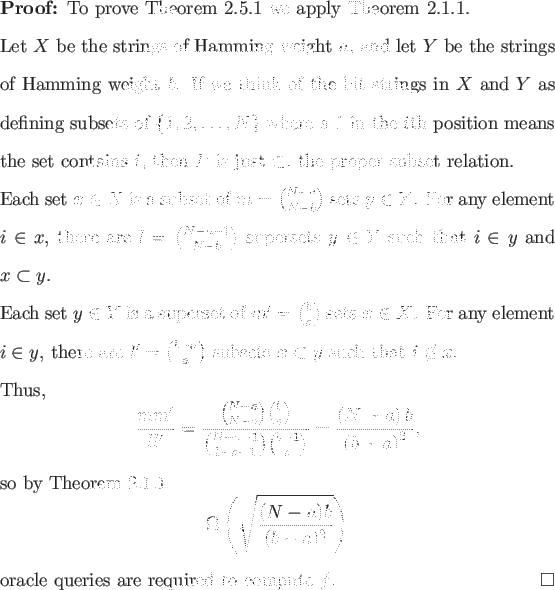

Recall that the Hamming weight of a bit string is the number of 1's it has.
Consider the special class of N-bit Boolean functions f such that f (x) = 1 for all inputs x of Hamming weight a, and f (x) = 0 for all inputs x of Hamming weight b. Without loss of generality assume a < b. We will attain a lower bound depending only on the parameters a and b.

Like Lemma 2.2.1, this result allows us to easily attain lower bounds for many functions. In general, the closer a and b are to each other and to N/2 the better. We illustrate the particular success of Theorem 2.5.1 in the case of symmetric functions in the following two sections, and with relatively less success in the case of non-trivial monotone graph properties in Section 3.2.